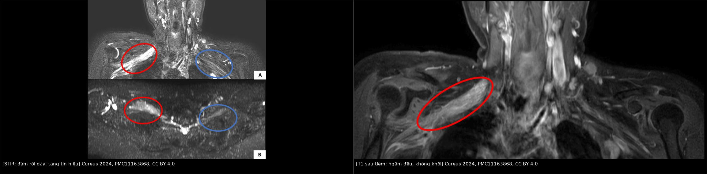
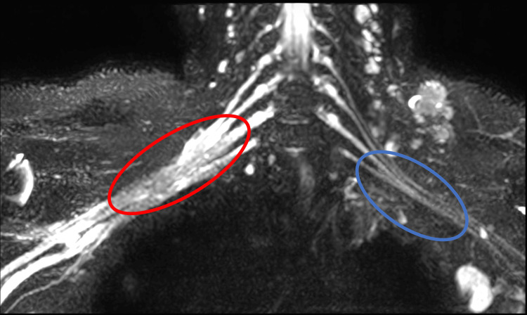
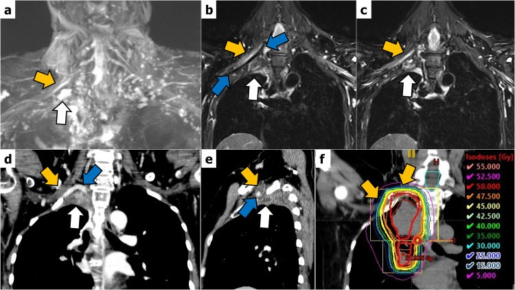

1617 — Bệnh đám rối cánh tay do xạ / Radiation-induced brachial plexopathy (RIBP)
Tags: pattern:dam-roi-day pattern:day-than-kinh vung:dam-roi-canh-tay score:LENT-SOMA protocol:MR-neurography protocol:STIR
Mức chắc chắn (certainty): tổng hợp y văn (literature synthesis) — biên từ toàn văn: tổng quan chẩn đoán–điều trị RIBP (PMC12723156, CC BY 4.0), ca MRI đám rối do xạ 8 năm sau xạ (PMC11163868, CC BY 4.0) và ca RIBP dưới ngưỡng liều dung nạp (PMC10865071, CC BY 4.0). Có phản biện chỗ mâu thuẫn giữa hai nguồn về tín hiệu MRI (mục 3).
1. Tổng quan — xạ làm hỏng đám rối theo hai thì, và TẠI SAO hình ảnh lại khác nhau ở hai thì đó
- Bệnh học: đám rối cánh tay (C5–T1) nằm sát hạch nách và hạch trên đòn — đúng vùng liều cao của xạ vùng ngực/hạch sau mổ ung thư vú, xạ đầu–cổ, xạ đỉnh phổi, lymphoma. Xạ gây viêm mạn + xơ hóa do xạ (radiation-induced fibrosis — RIF): TGF-β1 và CTGF kích thích nguyên bào sợi → nguyên bào cơ sợi → lắng đọng collagen, liên kết chéo ma trận ngoại bào làm mô "cứng" và rất khó phân hủy. Hệ quả: sợi trục bị chèn ép trong bao xơ, vi mạch nuôi thần kinh tổn thương → hủy myelin + mất sợi trục (PMC12723156).
- Hai thì lâm sàng — và đây là chìa khóa để hiểu hình ảnh:
- Khởi phát sớm (3–6 tháng): rối loạn dẫn truyền thoáng qua, 80% tự khỏi trong vòng 1 năm (PMC12723156).
- Khởi phát muộn (kinh điển): trung bình 40 tháng sau xạ, dao động 3–4 năm đến hơn 10 năm; đây là thể không hồi phục (PMC12723156).
- TẠI SAO MRI có lúc "sáng" có lúc "tối" trên T2: giai đoạn còn viêm/phù → nước tự do trong nội mô thần kinh kéo dài T2 (và STIR ức chế mỡ nên càng nổi bật) + hàng rào máu–thần kinh còn rò → ngấm thuốc đều. Giai đoạn xơ hóa muộn → collagen liên kết chéo, ít nước → tín hiệu gần như cơ vân, không ngấm thuốc (PMC12723156). Vì vậy "T2 sáng + ngấm đều" không loại trừ RIBP, và "T2 tối" cũng không loại trừ RIBP — phải đặt cạnh thời điểm xạ và tốc độ tiến triển.
- Số liệu nằm lòng (ngưỡng liều):
- Nguy cơ < 1% khi phân liều 2,2–2,5 Gy và tổng liều ≤ 40 Gy (PMC11163868 dẫn y văn).
- Liều tối đa vào đám rối 60–66 Gy thường được coi là an toàn, nhưng đã có ca RIBP ở 41–60 Gy (meta-analysis, PMC10865071); ca báo cáo: đám rối nhận 47–48 Gy vẫn bị RIBP.
- Ung thư phổi không tế bào nhỏ thể đỉnh: tỉ lệ RIBP 3 năm là 12%, và chỉ ở nhóm liều tối đa ≥ 78 Gy (PMC10865071).
- Dịch tễ: ung thư vú có tỉ lệ năm cao nhất, khoảng 2,9%, hằng định suốt đời; y văn cũ ghi tới 15–66% ở kỹ thuật cũ; kỹ thuật hiện đại còn 1,0–1,2%, trong đó 80% là thể sớm tự khỏi (PMC12723156). Đầu–cổ: 7% chung, 0,3% ở ung thư vòm (PMC12723156).
- Diễn tiến tự nhiên: dị cảm/đau → yếu cơ (khởi đầu ngón cái rồi lan gần) → teo cơ, giảm/thay đổi phản xạ; phù bạch mạch và da teo xơ đi kèm 20% ca muộn. Khi đã liệt chi, thường trong vài tháng đến 5 năm sau dấu hiệu bàn tay đầu tiên (PMC12723156).
2. Mẫu hình + chẩn đoán phân biệt theo vị trí và theo thì (Gamut)
- Mẫu hình cốt lõi: dày đám rối lan tỏa, liên tục, không có khối, đối xứng bên đối diện để so sánh, kèm teo cơ vùng vai–cánh tay cùng bên.
- Gamut theo vị trí tổn thương (định khu bằng MRI):
- Rễ/thân (C5–T1, trên đòn): xạ hạch trên đòn, xạ vùng cổ — tổn thương thân trên (C5–C6) → yếu cơ delta, nhị đầu, dị cảm mặt ngoài cẳng tay.
- Bó/dây (dưới đòn, hạch nách): xạ hạch nách sau mổ vú — tổn thương bó ngoài/sau → yếu cơ gian cốt, duỗi cổ tay; đây là vị trí hay bị bỏ sót nhất vì nằm ngoài FOV nếu chỉ chụp cột sống cổ.
- Nhánh tận: hiếm khi là tổn thương do xạ đơn thuần; nếu chỉ một dây bị ảnh hưởng, nghĩ nguyên nhân khác (chèn ép, chấn thương mổ, khối u).
- Gamut chẩn đoán phân biệt (theo thứ tự phải loại trừ):
- Tái phát hạch/xâm lấn đám rối — bắt buộc loại trừ đầu tiên ở mọi bệnh nhân ung thư; khối + ngấm thuốc + FDG dương.
- U thần kinh ngoại biên thứ phát sau xạ (radiation-induced neoplasm) — xuất hiện muộn hơn nhiều so với RIBP, dạng khối, có thể đau dữ dội.
- Chèn ép cơ học khác: hạch xơ, dải xơ sau mổ, hội chứng lối thoát ngực, thoát vị đĩa đệm cổ (C5–C6).
- Bệnh thần kinh do hóa trị (taxane, platinum) — đối xứng hai bên, không có dày đám rối một bên.
- Phù bạch mạch đơn thuần — nặng lên khi gắng sức, không có dấu hiệu thần kinh khu trú.
3. Bảng so sánh phân biệt (ma trận đối chiếu)
| Thực thể (entity) | Hình ảnh điển hình (MRI đám rối) | Chốt vào (rule-in) | Chốt loại (rule-out) | Gợi ý xác nhận |
|---|---|---|---|---|
| RIBP thể viêm/phù (sớm hoặc còn hoạt tính) | Đám rối dày, phù, tăng tín hiệu STIR/T2, ngấm thuốc đều, mất mỡ quanh thần kinh, không khối | Dày + phù lan tỏa theo trường xạ + ngấm đều + không khối | Có khối khu trú hoặc ngấm không đều dạng nốt → nghi tái phát | Đối chiếu bên đối diện, so phim trước xạ, EMG (myokymia) |
| RIBP thể xơ hóa muộn | Đám rối dày, kiến trúc méo, tín hiệu gần cơ vân trên T1 và T2, không ngấm thuốc | Dày + méo + không ngấm + không khối, bệnh sử xạ cách nhiều năm | Ngấm thuốc rõ hoặc tăng T2 mạnh → không phải thể xơ thuần | EMG; theo dõi 3–6 tháng; PET/CT nếu vẫn nghi |
| Tái phát hạch/xâm lấn đám rối | Khối cạnh đám rối, tăng T2 không đều, ngấm thuốc dạng nốt/viền, xóa mỡ, có thể xâm lấn liên tục | Khối + ngấm thuốc không đều + FDG dương tính | Chỉ dày đám rối lan tỏa, không khối, FDG âm → nghiêng RIBP | PET/CT, sinh thiết nếu đổi hướng điều trị |
| U thần kinh thứ phát sau xạ (MPNST) | Khối lớn dọc dây thần kinh, hoại tử, bắt thuốc mạnh | Khối > 5 cm, hoại tử, tiền sử xạ > 10 năm | Không có khối → loại | Sinh thiết/mổ |
| Bệnh thần kinh do hóa trị | Đám rối bình thường hoặc dày nhẹ hai bên đối xứng | Đối xứng + tiền sử taxane/platinum + không liên quan trường xạ | Dày một bên trong trường xạ → nghiêng RIBP | EMG/NCS, ngừng thuốc thử |

Bệnh nhân 37 tuổi, 8 năm sau xạ 50 Gy thành ngực + 45 Gy hạch vùng: đám rối phải (vòng đỏ) dày, phù, tăng tín hiệu STIR so với bên trái (vòng xanh), và ngấm thuốc đều trên T1 sau tiêm — không có khối, đám rối còn liên tục nên loại trừ đứt do mổ. Nguồn: Shetty ND et al., Cureus 2024 (PMC11163868), CC BY 4.0. Ảnh ghép letterbox.Phản biện nguồn (bắt buộc đọc)
- Mâu thuẫn thật: tổng quan PMC12723156 mô tả RIBP điển hình là không ngấm thuốc, tín hiệu như cơ vân; ca PMC11163868 (8 năm sau xạ) lại có phù + ngấm đều. Hai nguồn không sai — chúng mô tả hai thì khác nhau của cùng quá trình (viêm/hoạt tính vs xơ hóa). Vì vậy không được lấy "ngấm thuốc" làm tiêu chuẩn loại trừ RIBP, và cũng không được lấy "T2 tối" để khẳng định lành.
- Cỡ mẫu: PMC11163868 và PMC10865071 là ca đơn lẻ — chỉ dùng để minh họa hình ảnh/ngưỡng liều, không suy ra quy luật.
- Điểm chốt phân biệt không nằm ở MRI một mình: myokymia trên EMG gặp ở 60% RIBP so với 4% plexopathy do u (PMC12723156) — đây là dấu hiệu phân biệt mạnh nhất trong y văn; còn 90% cả hai nhóm đều có bất thường dẫn truyền, nên NCS không phân biệt được.
4. Protocol chụp + thang phân độ
MRI đám rối cánh tay (protocol tối thiểu):
- FOV từ C4 đến nách, gồm cả hố trên đòn và hạch nách hai bên — đây là yêu cầu số 1; FOV hẹp là lý do hay nhất khiến "MRI âm tính" mà bệnh nhân vẫn yếu tay.
- Chuỗi xung: STIR/T2 fat-sat coronal (phù/thâm nhiễm), 3D MR neurography (MIP để lần theo thân–bó–dây), T1 trước và sau gadolinium có ức chế mỡ (khối vs ngấm đều), axial T1/T2 qua đám rối.
- Luôn so sánh bên đối diện trên cùng mặt phẳng; ghi rõ bên, đoạn (rễ/thân/bó/dây) và có/không có khối.
- Không dùng MRI đơn thuần để loại trừ tái phát: nếu lâm sàng xấu đi nhanh hoặc có khối nghi ngờ → PET/CT và/hoặc sinh thiết (PMC12723156).
Thang phân độ (dùng để theo dõi, không để chẩn đoán):
- LENT-SOMA cho đám rối: chấm S (chủ quan: đau, dị cảm), O (khách quan: yếu cơ, phản xạ), M (quản lý: can thiệp nội khoa/phẫu thuật); điểm SOM cộng lại chia 11 để ra điểm LENT (PMC12723156, bảng phân độ).
- CTCAE cho độc tính thần kinh ngoại biên khi theo dõi sau hóa–xạ (dùng chung ngôn ngữ với ung thư).
- Mốc theo dõi thực hành: khám lâm sàng mỗi 3–6 tháng trong 2 năm đầu sau xạ hạch trên đòn/nách; MRI khi có triệu chứng mới, không chụp sàng lọc định kỳ.
flowchart TD
A[Bệnh nhân đã xạ vùng nách hoặc trên đòn, yếu hoặc dị cảm tay] --> B{Thời điểm sau xạ}
B -->|Dưới 6 tháng| C[Nghĩ thể sớm: theo dõi, 80 phần trăm tự khỏi trong 1 năm]
B -->|Trên 1 năm| D[MRI đám rối có STIR và T1 sau tiêm]
D --> E{Có khối hoặc ngấm thuốc không đều?}
E -->|Có| F[Nghi tái phát: PET CT, sinh thiết]
E -->|Không| G{Đám rối dày, liên tục, trong trường xạ?}
G -->|Có| H[RIBP: EMG tìm myokymia, LENT SOMA, phục hồi chức năng]
G -->|Không| I[Tìm nguyên nhân khác: thoát vị cổ, hội chứng lối thoát ngực, hóa trị]
5. Biến thể bình thường và cạm bẫy
- Đám rối "dày" ở người không triệu chứng sau xạ: thay đổi xơ hóa do xạ có thể im lặng; chỉ chẩn đoán RIBP khi có triệu chứng tương ứng. Đừng "điều trị hình ảnh".
- Dày nhẹ hai bên ở người trẻ/thành mảnh là biến thể; dày một bên trong trường xạ mới có nghĩa.
- Bó dây bình thường có thể trông "ngấm thuốc" nhẹ do đám rối tĩnh mạch quanh thần kinh — so sánh bên đối diện và dùng fat-sat.
- Cạm bẫy FOV: chụp cột sống cổ "bình thường" không loại trừ RIBP — tổn thương ở hạch nách/dưới đòn nằm ngoài FOV.
- Cạm bẫy PET/CT sau xạ: viêm do xạ có thể tăng FDG → dương tính giả; ngược lại khối nhỏ có thể FDG âm. Không quyết định mổ chỉ dựa trên PET.
- Satisfaction of search: thấy teo cơ vai là dừng lại — bỏ sót khối tái phát nhỏ ở đỉnh nách.
- Nhầm với phù bạch mạch: phù tay nặng lên khi gắng sức, không teo cơ, không mất cảm giác theo dải thần kinh.
6. Tự lượng giá — Blind Quiz
Ca 1 — Nữ 37 tuổi, 8 năm sau mổ + xạ ung thư vú phải, dị cảm và yếu tay phải 1 năm nay.

- Gợi ý: xạ 50 Gy thành ngực + 45 Gy hạch vùng, 25 phân liều; khám: giảm cảm giác mặt ngoài cẳng tay phải, không sờ thấy hạch.
- Câu hỏi: Dấu hiệu chính trên ảnh? Hai chẩn đoán phải loại trừ? Xét nghiệm nào phân biệt mạnh nhất?
Bấm để hiện đáp án (findings + chẩn đoán)
- Dấu hiệu: đám rối phải (vòng đỏ) dày và phù so với bên trái (vòng xanh), thân/bó liên tục, không có khối.
- Chẩn đoán: RIBP thể muộn còn hoạt tính viêm — khởi phát trung bình 40 tháng, có thể tới hơn 10 năm sau xạ.
- Loại trừ: (1) tái phát hạch/xâm lấn đám rối — cần không có khối + ngấm thuốc đều; (2) u thần kinh thứ phát sau xạ — thường muộn hơn nhiều và dạng khối.
- Xét nghiệm phân biệt mạnh nhất: EMG tìm myokymia — gặp ở 60% RIBP so với 4% plexopathy do u; NCS chỉ cho thấy bất thường dẫn truyền ở 90% cả hai nhóm nên không phân biệt được.
- Nguồn: Shetty ND et al., Cureus 2024 (PMC11163868); Lambi AG et al., J Hand Surg Glob Online 2025 (PMC12723156), CC BY 4.0.
Ca 2 — Cùng bệnh nhân: STIR và T1 sau tiêm.
- Câu hỏi: Tín hiệu STIR và kiểu ngấm thuốc nói lên điều gì về giai đoạn bệnh? Nếu đám rối không ngấm thuốc và tối trên T2 thì chẩn đoán thay đổi thế nào?
Bấm để hiện đáp án (findings + chẩn đoán)
- STIR: đám rối phải tăng tín hiệu, dày (phù nội mô thần kinh) — nước tự do kéo dài T2, STIR ức chế mỡ nên càng rõ.
- T1 sau tiêm: ngấm đều toàn bộ thân–bó, không có ổ ngấm dạng nốt, không khối → phù hợp viêm/hoạt tính, không phải u.
- Nếu T2 tối + không ngấm: đó là thể xơ hóa muộn (collagen liên kết chéo, ít nước) — vẫn là RIBP, không phải "bình thường"; tổng quan PMC12723156 mô tả đúng thể này.
- Bài học: hai kiểu tín hiệu là hai thì của cùng bệnh, không phải hai bệnh.
- Nguồn: Shetty ND et al., Cureus 2024 (PMC11163868); Lambi AG et al., 2025 (PMC12723156), CC BY 4.0.
Ca 3 — Nam 55 tuổi, ung thư phổi đỉnh phải, xạ 50 Gy/25 phân liều, đám rối nhận 47–48 Gy; 6 tháng sau yếu tay phải.

- Câu hỏi: Liều 47–48 Gy có "an toàn" không? Vì sao vẫn phải loại trừ tái phát dù liều dưới ngưỡng?
Bấm để hiện đáp án (findings + chẩn đoán)
- Không có ngưỡng "an toàn tuyệt đối": liều tối đa 60–66 Gy thường được coi là an toàn, nhưng đã có RIBP ở 41–60 Gy; nguy cơ < 1% chỉ khi phân liều 2,2–2,5 Gy và tổng liều ≤ 40 Gy.
- Ở ung thư phổi đỉnh: tỉ lệ RIBP 3 năm là 12%, và chỉ ở nhóm liều tối đa ≥ 78 Gy — nên ca này là ngoại lệ đáng báo cáo.
- Vẫn phải loại trừ tái phát vì hình ảnh RIBP (dày, phù, ngấm thuốc) trùng lặp với xâm lấn đám rối; khác biệt nằm ở khối + ngấm không đều + FDG.
- Nguồn: Masumoto A et al., Cureus 2024 (PMC10865071), CC BY 4.0.
Bài liên quan chéo
- 598 – Xạ trị vùng hạch sau ung thư vú (nguồn liều vào đám rối)
- 593 – Phù bạch mạch chi trên sau điều trị ung thư vú (chẩn đoán phân biệt phù tay)
- 599 – Hội chứng dây nách & phù bạch mạch
- 522 – Theo dõi sau điều trị ung thư vú & tái phát muộn (bối cảnh "đau tay sau điều trị")
- 931 – Takayasu: can thiệp & theo dõi (đối chiếu tổn thương mạch–thần kinh vùng cổ vai)
Ảnh
- 4 ảnh gốc + 1 ảnh ghép, tất cả CC BY 4.0; chi tiết trong
images/CREDITS.md. - Ảnh ghép
composite_1617_STIR-sang-vs-T1-ngam-deu.jpgtạo bằngtools/make_composite.py(letterbox, giữ tỷ lệ, dải attribution). - Ca PMC10865071 dùng nguyên bản (không crop) để giữ đúng bố cục 2 bảng a–c.
Không dùng để chẩn đoán độc lập khi chưa có người hướng dẫn.